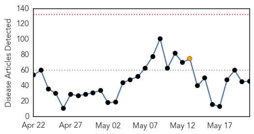
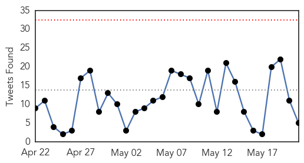
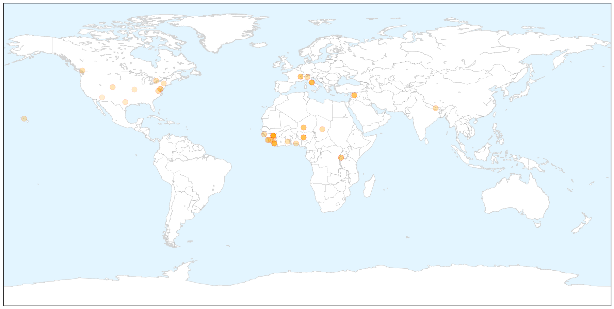
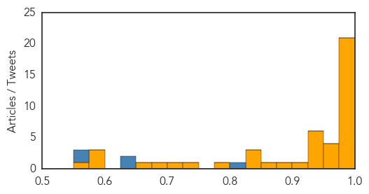
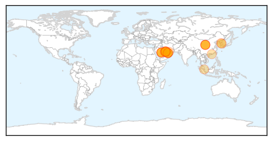
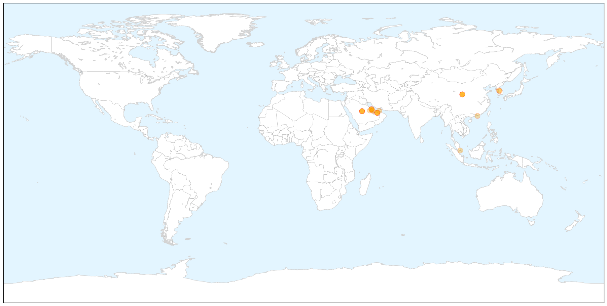
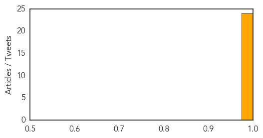

Ebola
30-Day Web Trend
0 alerts, 1 warnings

30-Day Twitter Trend
0 alerts, 0 warnings

Article Locations

X

Article Confidences
Top Articles:
- 1.000
- Sonora / Tuolumne News, Sports, & Weather, Angels Camp, Twain Harte, Jamestown
- 1.000
- Sierra Leone berates Ebola quarantine escapees as cases surge
- 1.000
- Ebola Cases Surge in Guinea, Sierra Leone
- 1.000
- Sierra Leone berates Ebola quarantine escapees as cases surge
- 1.000
- Sierra Leone berates Ebola quarantine escapees as cases surge - Sierra Leone
- 0.999
- Ebola cases surge in Guinea, Sierra Leone
- 0.999
- What we didn't learn from the Ebola outbreak
- 0.999
- Sierra Leone Ebola Crisis: One year on, the road to recovery continues - Sierra Leone
- 0.998
- Sierra Leone berates Ebola quarantine escapees as cases surge
- 0.997
- AU-ASEOWA Mission Head Bids Farewell to Prez Sirleaf
- 0.993
- West Africa's health systems need financial backing to overcome Ebola epidemic
- 0.992
- UN health agency responds to Ebola spike by deploying team on border of Guinea and Guinea-Bissau
- 0.989
- Ebola Survivors Dying Of Hunger Commit Suicide
- 0.989
- How the world is wiping out killer diseases
- 0.987
- Sierra Leone: Sierra Leone berates Ebola quarantine escapees as cases surge
- 0.986
- Guinea President Thanks Cuba as Medics Prepare to Return Home
- 0.985
- Mike Fay: The five biggest health challenges today
- 0.984
- The other Grade 3 emergencies apart from Ebola
- 0.980
- WHO Calls For $100 Million Emergency Fund, Doctor 'SWAT Team'
- 0.978
- UNMEER boss lauds female journalists for campaign towards zero Ebola
- 0.975
- Too soon to celebrate
- 0.972
- WHO Calls For $100 Million Emergency Fund, Doctor 'SWAT Team'
- 0.968
- WHO Calls For $100 Million Emergency Fund, Doctor 'SWAT Team'
- 0.967
- Sierra Leone: Sierra Leone Ebola Crisis: One year on, the road to recovery continues
- 0.958
- Air France to resume flights to ebola-hit Sierra Leone
- 0.947
- Daily Exchange
- 0.947
- Guinea after Ebola « Afronline – The Voice Of Africa
- 0.938
- New smartphone app would track spread of Ebola
- 0.937
- NCHPAD Blog - Endless CapABILITIES
- 0.931
- Ebola vaccine trial hits Hohoe; GH¢200, phones for participants
- 0.929
- Assessment of the Impact of Ebola Virus Disease (EVD) in five districts in Sierra Leone - Sierra Leone
- 0.916
- Liberian now free to come to Quest
- 0.889
- World Health Assembly: Health Threats Don’t Recognize Borders
- 0.863
- Welcome to the Expotimes News
- 0.850
- Dr. Jeanne M. Novak, President & CEO of CBR International Corp.®, to attend World Health Organization (WHO) meeting
- 0.838
- May 21 news: WHO, childhood vaccine reduces cancer risk, healthy states for seniors, health workers under threat
- 0.830
- UH researcher working on Ebola vaccine
- 0.789
- Guinea: UN health agency responds to Ebola spike by deploying team on border of Guinea and Guinea-Bissau
- 0.735
- Taylor Application to Appeal Decision on his Motion for Transfer to Rwanda Denied
- 0.708
- Ebola Stigma Toolkit: Accepting and Supporting Ebola Survivors, Orphans and Families of Ebola Patients in the Community
- 0.680
- Columbia panelists agree there's nothing super about 'superbugs'
- 0.660
- Medical Missionary, Ebola Survivor Dr. Kent Brantly to Highlight FHU’s Annual Benefit Dinner
- 0.592
- Brazen attacks on health workers on rise, human rights groups say
- 0.586
- 20th CBRNE Soldiers help to halt Ebola in Liberia
- 0.576
- Liberia Ponders Site for National Ebola Monument
- 0.556
- ASU professor named most creative person for Ebola work
Top Tweets:
- 0.825
- Meet the Liberian Filmmakers Who Made Documentaries on the Ebola Outbreak - Huffington Post http://t.co/Ucc6tNAd8m ebola EVD
- 0.648
- UH researcher working on Ebola vaccine - Hawaii News Now http://t.co/UdogT4hOTF ebola EVD
- 0.633
- Liberia Ponders Site for National Ebola Monument - Voice of America http://t.co/k7sY1uPeE0 ebola EVD
- 0.573
- New smartphone app would track spread of Ebola - University of Rochester Newsroom http://t.co/hoTciq1idJ ebola EVD
- 0.572
- The other Grade 3 emergencies apart from Ebola - Devex http://t.co/a0qWcHvHBE ebola EVD
MERS
30-Day Web Trend
2 alerts, 0 warnings

30-Day Twitter Trend
4 alerts, 0 warnings

Article Locations

X

Article Confidences
Top Articles:
- 0.999
- Bahrain launches investigation into new Mers threat
- 0.999
- S. Korea confirms third case of MERS virus; 64 isolated
- 0.999
- Gulf Daily News Local News New Mers threat
- 0.999
- South Korea confirms third case of MERS virus; 64 isolated
- 0.999
- MERS primer: what you need to know
- 0.999
- UPDATE 3-South Korea confirms third case of MERS virus; 64 isolated
- 0.998
- South Korea confirms third case of MERS virus; 64 isolated
- 0.998
- South Korea confirms third case of MERS virus; 64 isolated
- 0.998
- South Korea confirms third case of Mers virus; 64 people isolated, East Asia News & Top Stories
- 0.998
- South Korea confirms third case of Mers virus; 64 people isolated, East Asia News & Top Stories
- 0.998
- South Korea confirms three cases of Mers virus; places 64 others in isolation
- 0.998
- MERS Virus case reported in South Korea
- 0.998
- DH closely monitors first two MERS cases in Korea
- 0.997
- Second case of MERS confirmed in S. Korea, third case possible
- 0.996
- Abu Dhabi health authorities confirm second Mers case
- 0.996
- MERS cases grow in South Korea: 3 confirmed to date, 64 contacts isolated
- 0.995
- More MERS cases in South Korea, Qatar, Saudi Arabia
- 0.995
- S Korea confirms third case of MERS; 64 isolated
- 0.994
- The Chosun Ilbo (English Edition): Daily News from Korea
- 0.993
- SCH reports new case of Mers coronavirus
- 0.992
- Abu Dhabi announces two new MERS cases
- 0.991
- South Korea confirms second case of MERS virus; third case possible
- 0.987
- Mers probe initial results announced
- 0.981
- South Korea confirms second case of MERS virus; third case possible, Others news, Health News, AsiaOne YourHealth
Top Tweets:
-
No tweets found for May 21, 2015